1.完善界面
首先讲的是界面。 开发软件的情况下我们可能无需操心界面的问题，只需要随心所欲放置组件比如：按钮、编辑框、对话框等等。 但实际呈现给用户的界面不可能是这种乱糟糟的，比如下面这张图： 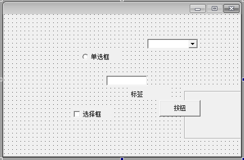 所以界面至关重要(当然也不是很重要，你可以等后期再去修改。但是开发过程中界面整齐简介明了一点可以省下很多事，比如某东西看一眼你就知道他是什么了) 首先第一件事，给对应的组件命名，这样代码一眼就能明白。比如以下两张图的对比： 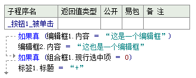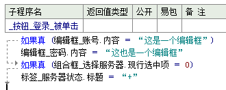 这样对比一下左右两侧的代码是不是发现右侧组件命名后更清晰明了呢？ 那接下来就告诉你如何命名组件的名字。 首先选中一个组件，如左侧图片所示，左侧属性面板里，箭头所指的位置第一项[名称]就是组件的名字啦。我们将重命名为[按钮_这是一个按钮]按下[enter]即[回车键]就可以了，如右侧图示: 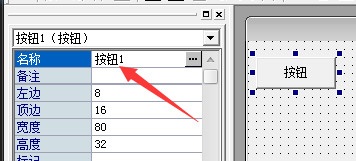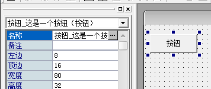 其他组件命名同理，这里就不一一所示了。注意一点，命名方式尽量简单明了，最好养成习惯，比如[组件名_命名]。如[标签_程序说明、选择框_记住账号、超文本浏览框_网页引用说明、按钮_保存内容]。 然后我们讲一下界面组件的排列顺序。依旧取第一张图来示例： 这里我们对他进行一些排列，得到如下图示： 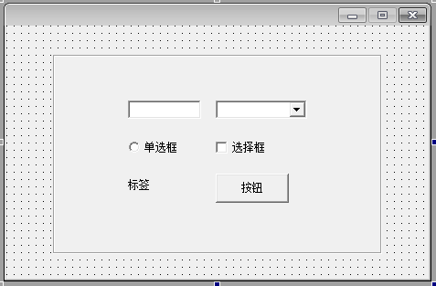 是不是更整齐一些了呢，这里我们就要讲到利用[shift]键选中多个组件然后[右键鼠标 位置及尺寸]这一操作了。 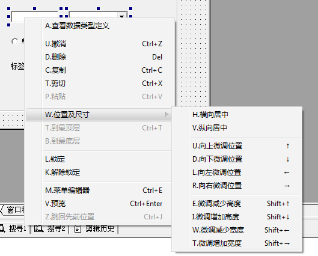 按住[shift]键选中多个组件后我们就可以选择自己想要的对齐方式了，这里不详细讲解 PS1：真没什么可讲的，字面意思，操作一下就知道了 PS2：注意按住[shift]才可以选中多个组件，中途松掉后只会选择最后一个你选择的组件，并且鼠标右键时候必须在选中的任一组件范围内才行 PS3：真没了。看下一节内容吧。
2.计算器基础功能实现
老规矩，先上界面，你照抄或者自行设计界面都可以。 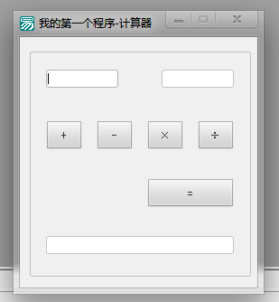 功能不多。其中应用到了 1.[编辑框.获取焦点 ()]判断上方两个编辑框是否输入了数字，如果没有输入就弹出信息框提示并激活对应未输入内容的编辑框 2.[标签.标题 ＝ “+/-/×/÷”]下方四个符号按钮用来更改两个编辑框中间的标签的显示。如图所示： 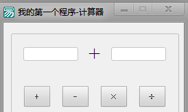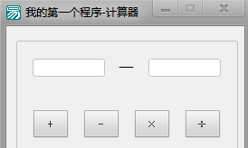 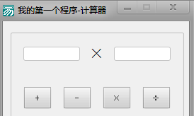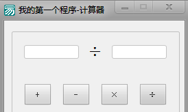 3. PS1：没有3了，你还指望有更多提示？ PS2：最上面有成品和源码下载，你不会没发现吧？不会吧不会吧不会吧？ PS3：功能演示。
3.计算器高级功能实现
先把上面学完再说。
4.换皮操作？给计算器换个好看的界面吧
楼上说的对。
5.骚操作！在计算器上加上数字键盘
三楼四楼说得对。
6.进阶操作！让计算器有更多的功能
我觉得六楼是对的。还有，网页背景音乐贼好听。
7.终极蛇皮怪！给计算器加上登录验证吧
恕我直言，上面的各位都是垃圾。